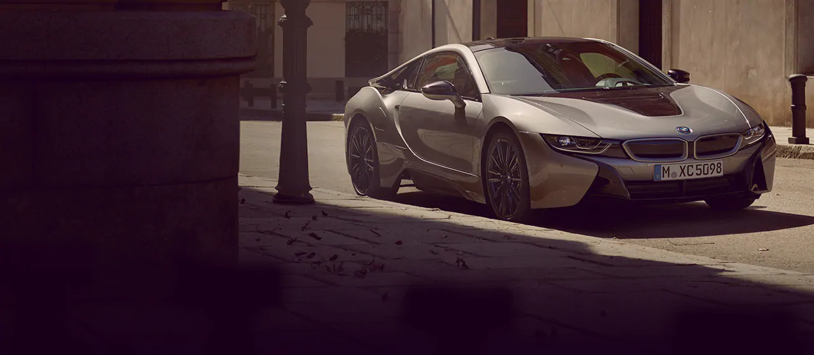

The future is taking shape – in the form of the BMW i8 Coupe. Inspiring, fascinating and ready to
reinterpret mobility. For unconditional sheer driving pleasure that lasts as long as the road ahead.
The mere sight of the iconic design is enough to cause the adrenaline level to rise. And the rev
counter soars to new heights just as quickly.This is how to enter a new era in record time.
CO2 emissions 42 g/km (combined) Fuel consumption 1.8 l/100 km (combined) .
Power consumption 14 kWh/100 km (combined)
5 good reasons for the BMW i8 1.Silent electric driving in the plug-in hybrid sports car.
Coupe 2.From 0 to 100 in 4.4 seconds.
3.Exceptional lightweight construction concept for sporty.
4.Clever navigation thanks to BMW ConnectedDrive.
5.Iconic and futuristic design.
Please note that the following information is a label according to German law (Ordinance on
energy consumption labelling for passenger cars).The driving range depends on a variety of
factors, especially: personal driving behaviour, selected route, weather conditions, usage
of heating/cooling The values of fuel consumptions, CO2 emissions and energy consumptions
shown were determined according to the European Regulation (EC) 715/2007 in the version
applicable at the time of type approval. The figures refer to a vehicle with basic confi
guration in Germany and the range shown considers optional equipment and the different
size of wheels and tires available on the selected model.

Price - Rs 1.2 crore
FUEL TYPE - Petrol